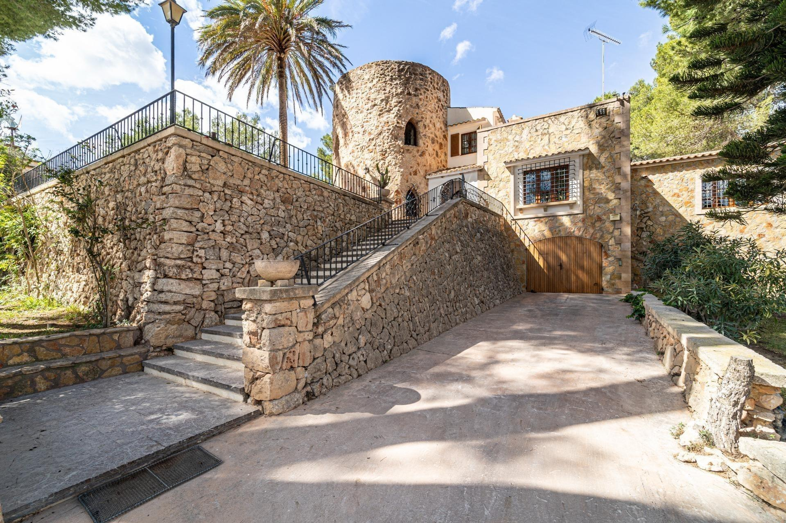

€899.999
Between Felanitx and Portocolom, Mallorca, Spain
Open the listingPreferred east pocket between Felanitx and Portocolom: multi-volume exposed-stone façades with a distinctive cylindrical stone tower, terracotta roofs, and pine-grove setting — charming character rather than sleek new-build. Gallery/aerial confirm a finished ~15 m private in-ground pool on a manicured terrace (not communal, not “pool possible”). Four legalized buildings, 4/3, ~475 m² on ~9,510 m² with garden, BBQ, solarium and 4 garages. At €899,999 it punches above typical under-cap east stock that is reforma, no-pool, or weak plaster.
Opened 11 Sep 2026. Gestpropiedad chalet 05ml019lf (WP id 30321376); price €899,999; ACTIVE today. Specs: 4 beds / 3 baths / 475 m² / 9,510 m² plot / year 1960; feature taxonomy includes Piscina. Photos (apinmo 25438113) confirm exposed-stone tower exterior + built private pool. Distinct from board Felanitx stock (felanitx, felanitx-garden, felanitx-porch, felanitx-historic, felanitx-porch). Not in existing ids/refs/urls.